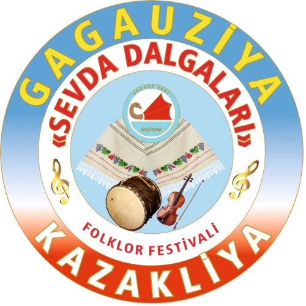
Ансамбль «Севда»
Фольклорный коллектив, сохраняющий и популяризирующий гагаузские традиции.
📖 О коллективе
Фольклорный ансамбль «Севда» — один из ведущих творческих коллективов Дома культуры села Казаклия, основанный в 1985 году.
Коллектив имеет звание «Образцовый» и на протяжении десятилетий активно сохраняет и популяризирует гагаузские народные традиции, песни и обряды.
Репертуар ансамбля включает народные песни, исполняемые как с аккомпанементом, так и a cappella, а также сценические постановки, отражающие быт и культуру гагаузского народа.
Ансамбль является участником многочисленных региональных, республиканских и международных фестивалей, представляя культуру Гагаузии за её пределами.
На базе коллектива ведётся работа с молодёжью: традиции передаются подрастающему поколению через участие детей и учащихся в деятельности ансамбля.
Руководитель: Чобан Пелагея Степановна
Деятельность
- Ежегодное участие в фестивале «Sevda Dalgaları»
- Концерты в Доме культуры
- Выездные выступления
📸 Фото/Видео галерея
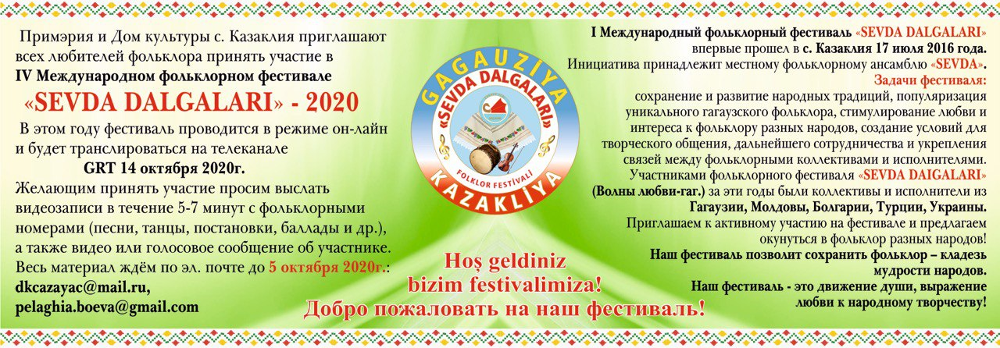
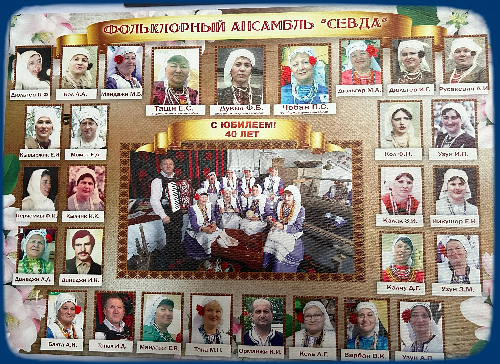
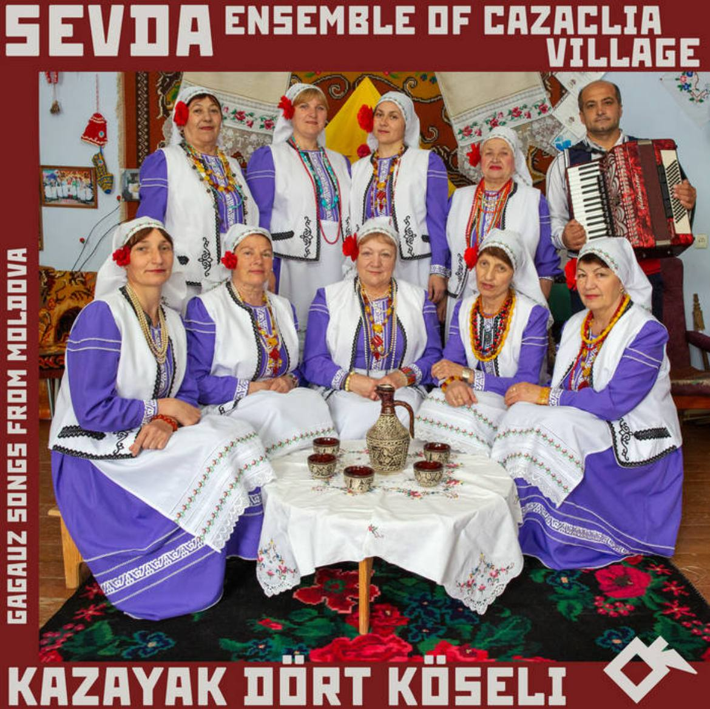
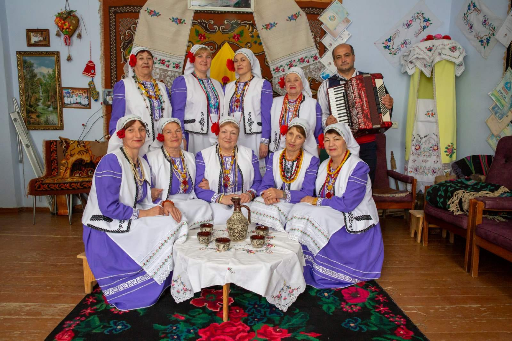
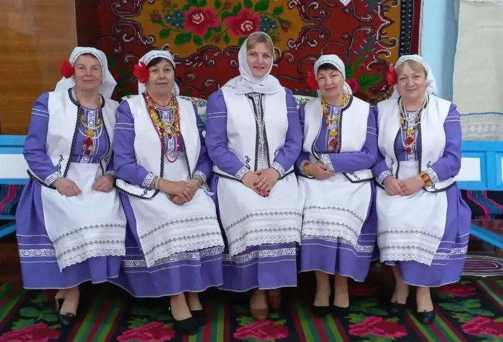
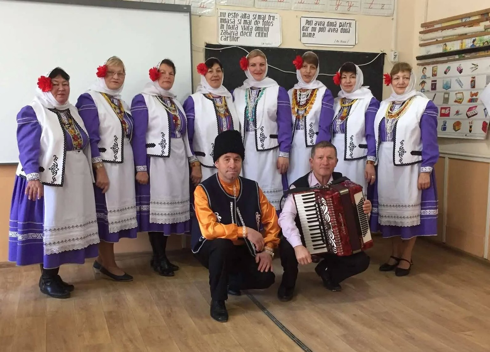
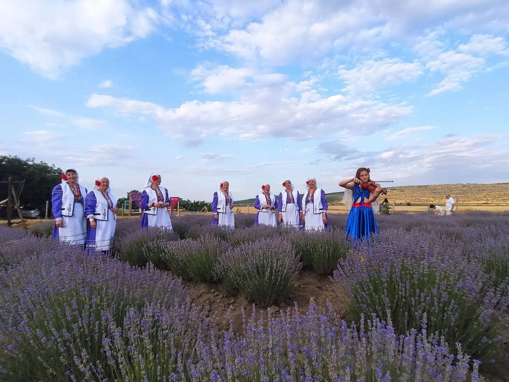
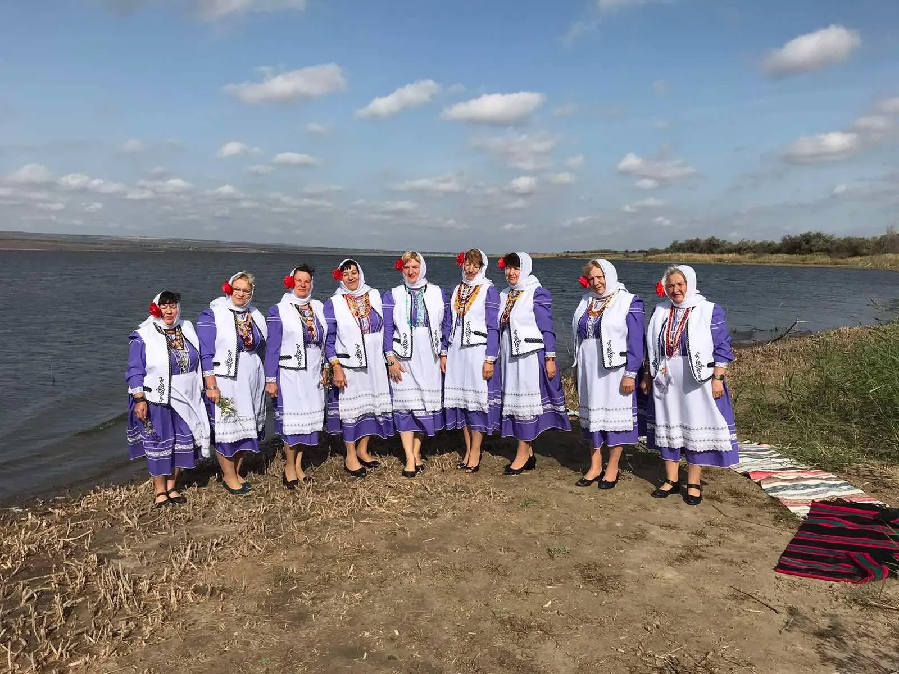
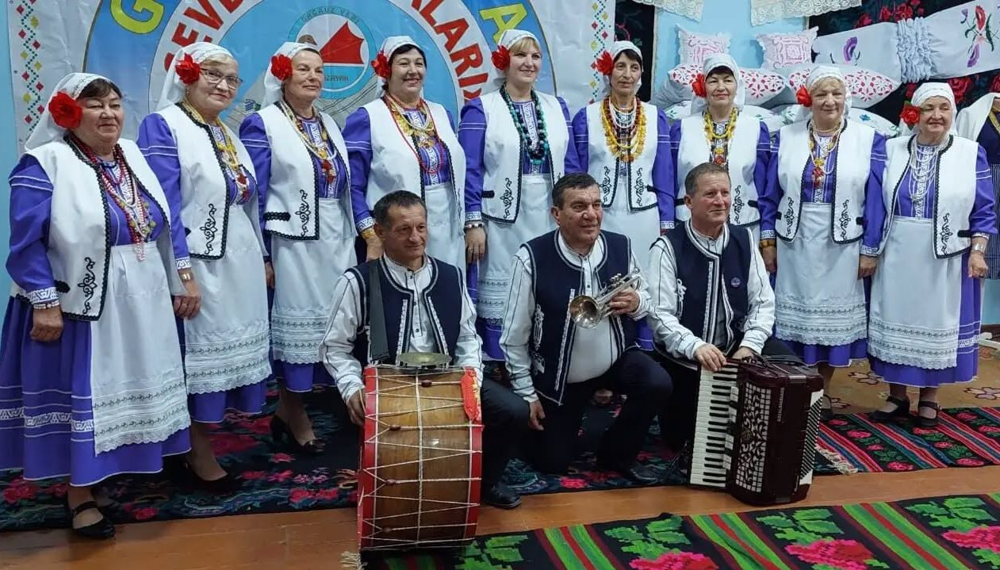
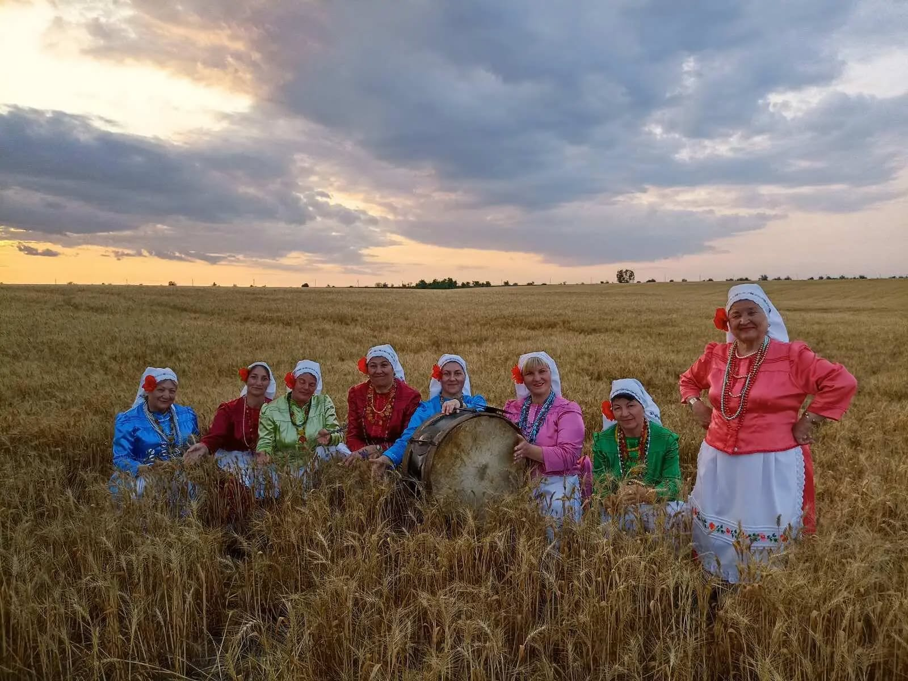
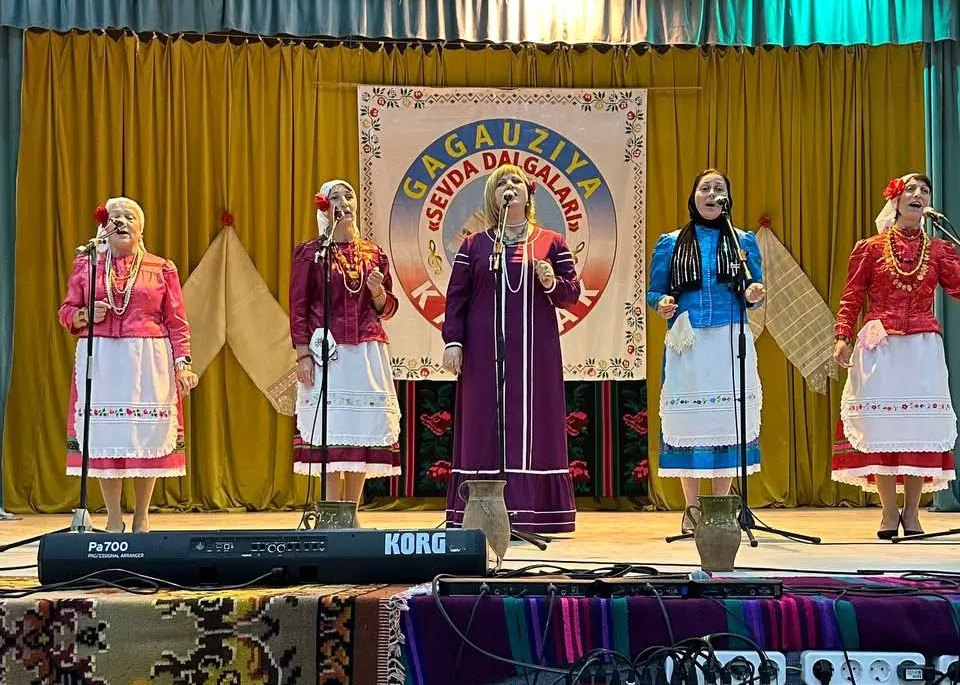
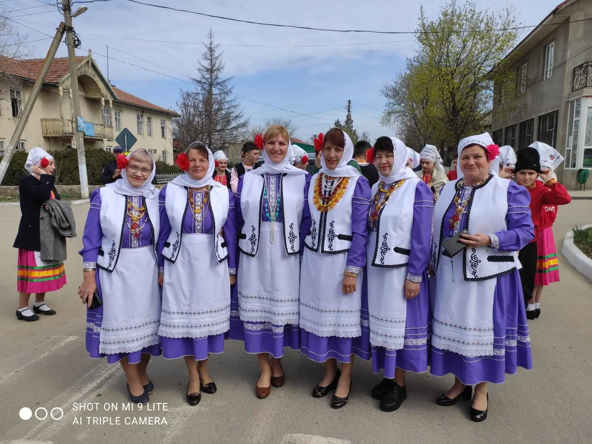
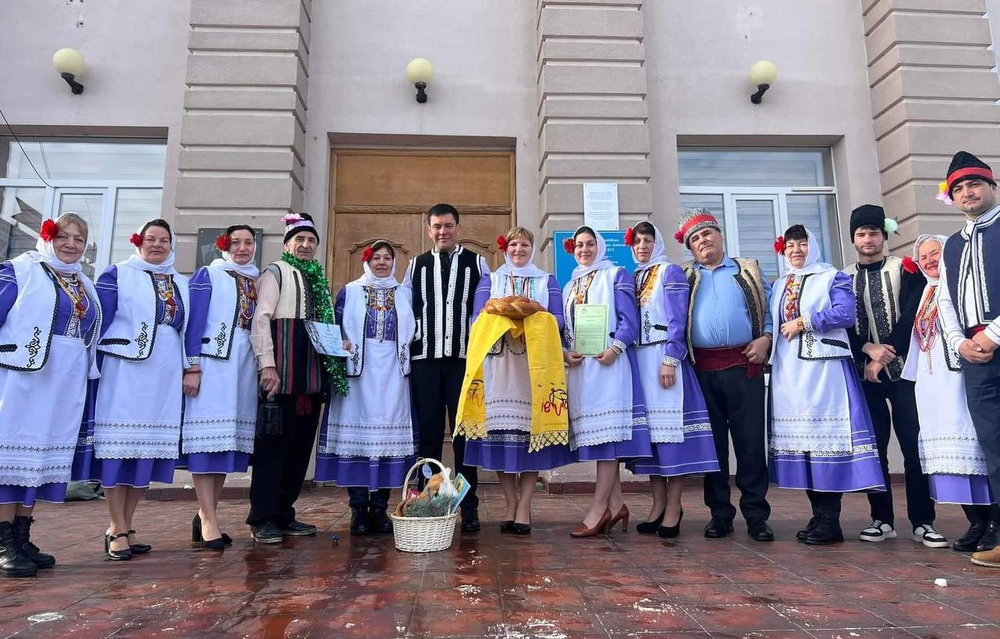
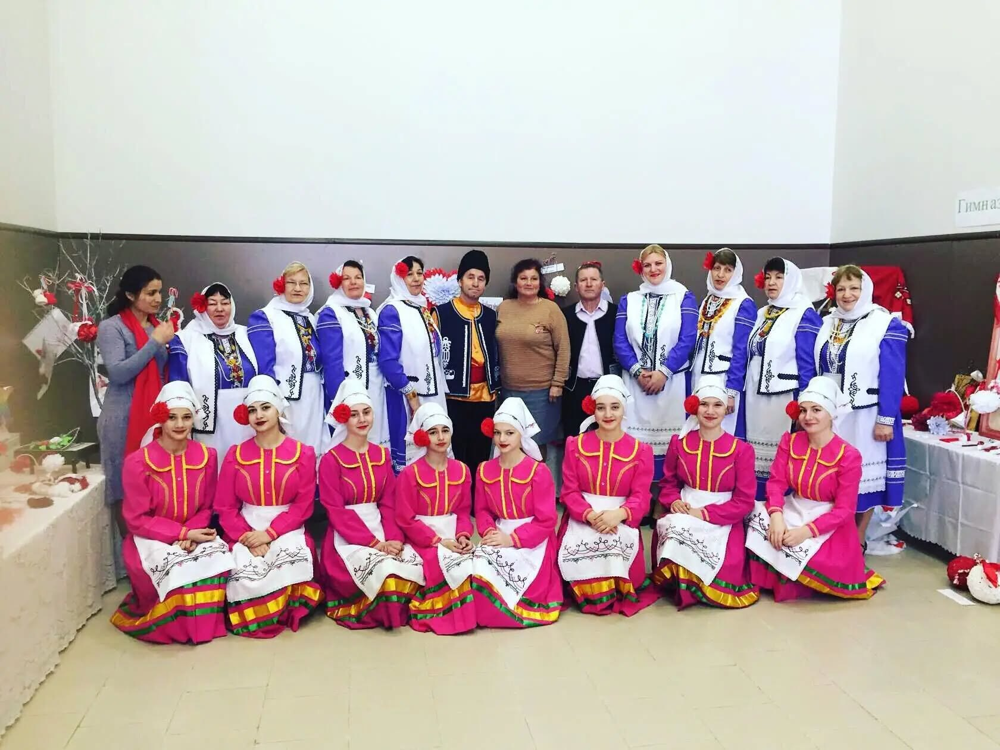